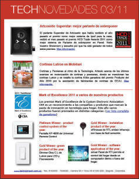
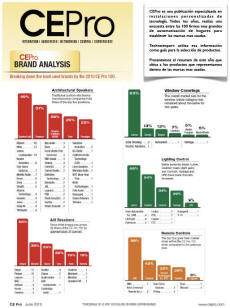
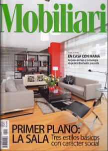

Publicaciones

TechNovedades
Publicación periódica de Technoimport con novedades de productos y noticias de tecnología

Interés
Publicaciones sobre temas de interés general
Radio
- Programa Radial Alo Jose Gabriel - 10/05/2006
- Programa de la tarde (La FM) - 03/04/2006
- Programa Radial Alo Jose Gabriel - 26/01/2006

Revistas
Publicaciones de revistas con productos y soluciones de Technoimport
- AXXIS - Reinvención del espacio
- INDICE - Seguridad de avanzada
- MOBILIARI - Casa segura
- INDICE - Bombillos ahorradores, Ahorro o gasto?
- ILUMINACION Y REDES - Tendencias en domótica
- MOBILIARI - Tecnología para mama
- MOBILIARI - Tecnología para casa: 50 opciones de avanzada
- PROPIEDADES Y REMODELACION - Seguridad en semana santa
- PROPIEDADES Y REMODELACION - Todos los juguetes para papa
- PROPIEDADES Y REMODELACION - Controle su casa con el dedo pulgar
- MOBILIARI - La casa del futuro
- CREDENCIAL - Supersónicos a la criolla
- GERENTE - El Hogar Soñado
- DE INGENIEUR - La puerta mas segura del mundo
-
Bizclub International Magazine - Colombia seguridad
- a prueba de todo
- ENTER - échele un ojo a su casa por Internet
- ENTER - Vigilancia IP. Alguien nos vigila
- ENTER - Conviértase en su propio "celador" virtual
- ENTER - Videovigilancia por Interne
Televisión
- Canal ET - Tecnologías para seguridad y ahorro de energía
- Canal NTN24 - Casas inteligentes
- CityTV - Hogar Digital
- Caracol Noticias - Sistema de ahorro de energía ECOSYSTEM
- Caracol Noticias - Control de personal con biometria
- Caracol Noticias - Digitalizador de video - 18/08/2006
- Caracol Noticias - Septiembre 30 2005 - Cámaras de Internet - 30/09/2005
Periódicos
Publicaciones de periódicos con productos y soluciones de Technoimport
- Portafolio - La inmotica se edifica verde
- Portafolio - Aparatos que se chupan la energía electrica
- Portafolio - Espacios que brillan con luz propia
- Portafolio - La iluminación, factor decisivo
- Portafolio - Alternativa de ambientes dinamicos
- Portafolio - Todo se puede tener bajo control en la casa
- Portafolio - Se puede automatizar el hogar
- El Tiempo - La domótica sigue ganando terreno
- El Tiempo - el boom de las casas Inteligentes
- El Tiempo - El mejor momento de Invertir es hoy
- El Tiempo - Vivir en medio de la Tecnología
- El Tiempo - Domótica: casas bajo control
- El Tiempo - El hogar digital ahora mas cerca
- El Tiempo - Llega a Colombia la vivienda Tecno
- El Tiempo - Con la casa en la palma de la mano
- El Tiempo - Videovigilancia por Internet
- El Tiempo - Los 12 apartamentos del futuro
- El Tiempo - Apartamentos del futuro en Bogota
- El Tiempo - Lo que falta para tener una casa en Red
- El Tiempo - Con Internet usted puede ser todo un policia
- El Tiempo - Hogar, inteligente hogar
- El Tiempo - Technoimport lanza el hogar digital
- El Espectador - Edificios con buena energía
- El Empleo - El polígrafo otra herramienta de seleccion
- El Universal de Mexico - Los 12 apartamentos del futuro en Colombia